<header>
				<div class="header-container">
				<!-- Logo links und anklickbar -->
				<a href="index.html" class="logo">
					
				</a>
				<!-- Navigation rechts -->
				<button class="menu-toggle" aria-label="Menü öffnen" aria-expanded="false">
				 ☰
				</button>
				
				<nav id="mainNav">
					<ul>
						<li class="has-submenu">
							<a href="#">Reiseberichte <span class="arrow"></span></a>
							<ul>
								<li> <a href="alle_reisen.html">Alle Reisen</a> </li>
								<li class="has-submenu">
									<a href="#">Radreisen <span class="arrow"></span></a>
									<ul>
										<li> <a href="radreise_nahe_rhein.html">Nahe- und Rheinradweg</a> </li>
										<li> <a href="nordseekuestenradweg_2022.html">Nordseeküstenradweg NL & DE</a> </li>
										<li> <a href="nordseekuestenradweg_haervejen.html">Nordseeküstenradweg DK & Hærvejen</a> </li>
										<li> <a href="ochsenweg.html">Ochsenweg</a> </li>
										<li> <a href="trient_verona.html">Trient - Verona</a> </li>
										<li> <a href="weserradweg_2020.html">Weserradweg</a> </li>
									</ul>
								</li>
								<li class="has-submenu">
									<a href="#">Wanderungen <span class="arrow"></span></a>
									<ul>
										<li> <a href="altmuehltal_panoramaweg.html">Altmühltal-Panoramaweg</a> </li>
										<li> <a href="mullerthal_trail.html">Mullerthal Trail</a> </li>
										<li> <a href="skaneleden_sl3_sl4.html">Skåneleden SL3 & SL4</a> </li>
									</ul>
								</li>
							</ul>
						</li>
						<li> <a href="ausruestung.html">Ausrüstung</a> </li>
						<li> <a href="unterkuenfte.html">Unterkünfte</a> </li>
					</ul>
				</nav>
				</div>
			</header>
